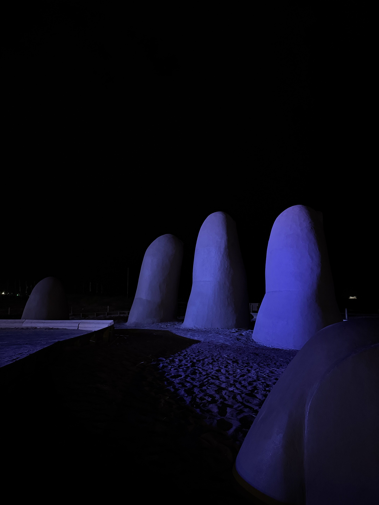
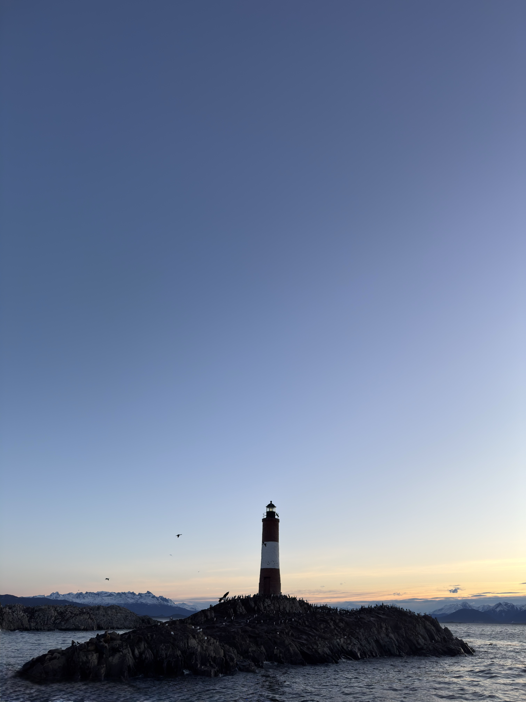
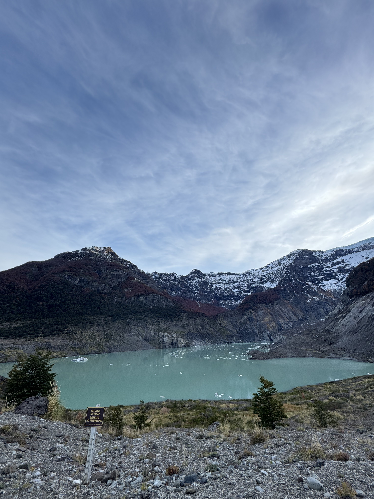
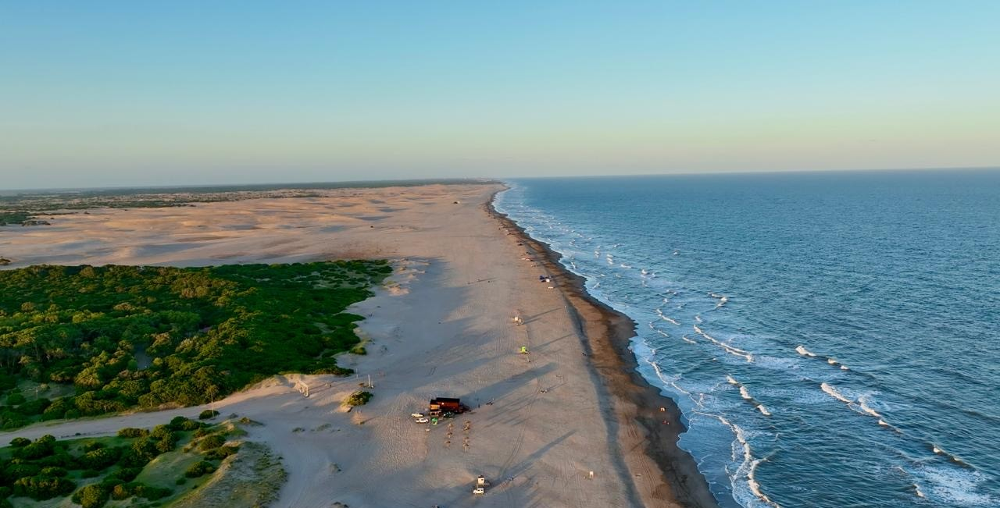

Cancun
Aguas turquesas y vida marina.

Uruguay
Arquitectura, playas y noches de Uruguay.

Ushuaia
Montañas, nieve y paisajes del fin del mundo.

Bariloche
Lagos, glaciares y caminos de montaña.

San Rafael
Naturaleza, bodegas y rincones de Mendoza.

Costa Argentina
Playas, médanos y atardeceres de la Costa Atlántica.